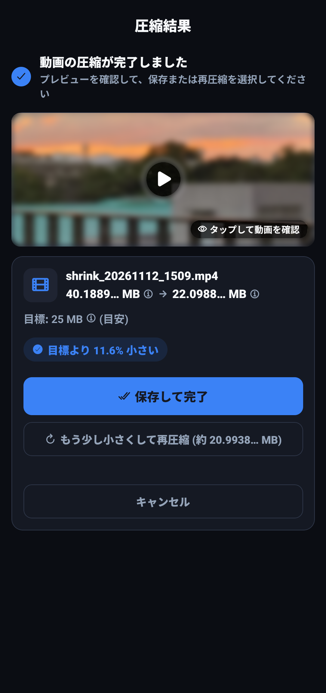
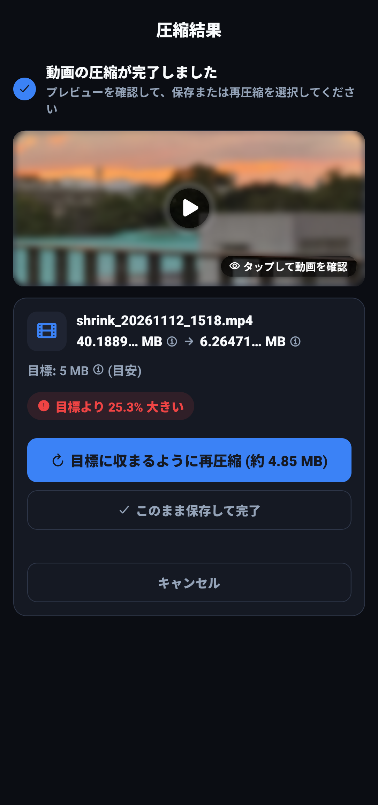
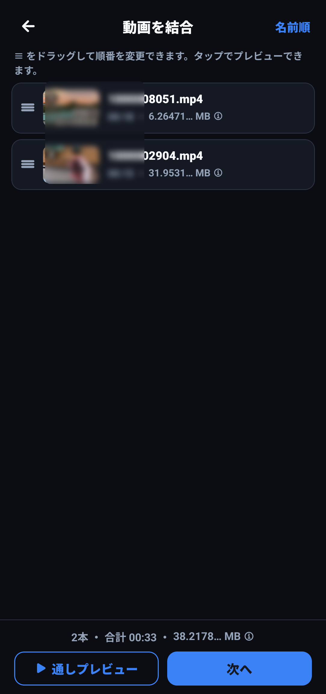
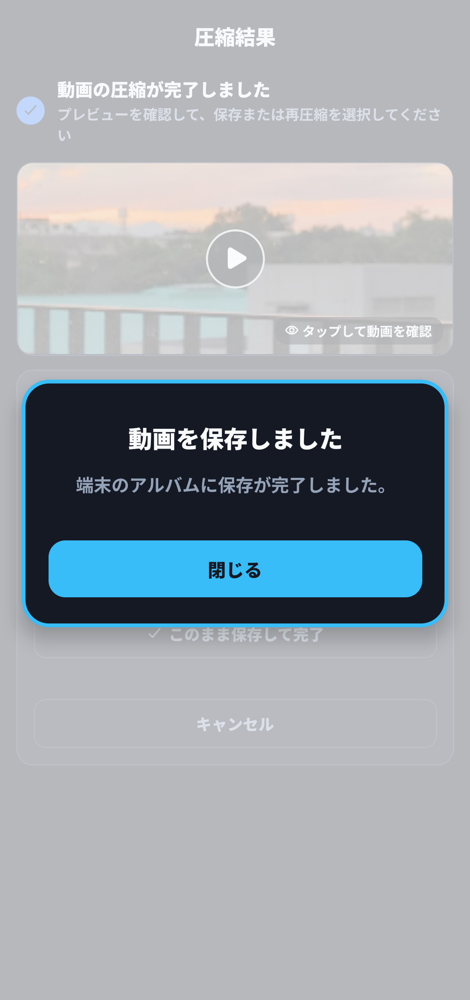

📖 この画面でできること
動画の圧縮または結合が完了すると「完了画面」が表示されます。削減された容量や仕上がり画質を確認し、端末への保存や他アプリへの共有をスムーズに行うことができます。


📊 結果の確認と各種操作
容量比較（Before / After）と削減率
結果画面の中央には、元のファイルサイズと圧縮後のファイルサイズが大きく表示されます（例: 54.3 MB → 24.8 MB）。
目標値に対してどれだけスリム化できたかを示す削減率バッジ（例: -54%）も緑色で表示され、一目で効果を確認できます。
フルスクリーンでのプレビュー再生
画面上部の動画サムネイルをタップすると、全画面プレビューモーダルが開きます。
シークバーでの早送り・巻き戻しや一時停止を行いながら、文字の可読性や映像のブロックノイズ、音声のクリアさなどを、保存前にその場ですぐにチェックできます。

アルバムへの保存と共有
画面下部の緑色ボタン「💾 アルバムに保存」をタップすると、端末の標準写真・動画ギャラリーへ動画ファイルがエクスポートされます。
保存が完了すると「アルバムに保存しました」という案内ダイアログが表示されます。また、隣の「共有」ボタンをタップすれば、アルバムを経由せずに直接LINEやSlack、メール添付へ動画を渡すことも可能です。

⚡ 目標超過時の「ワンタップ再圧縮」
動画圧縮において最も困るトラブルは、「25MB制限のメールに送りたいのに、わずか 25.04 MB になってしまい送信エラーになる」という現象です。
Shrinkでは待ち時間を極力減らすため、高速エンコードモードを採用しています。動画内の動きが激しいシーン（花火、水しぶき、スポーツなど）が多い場合、ビットレートの揺らぎによって仕上がりサイズが目標をほんの数KB〜数百KB超えてしまうことがあります。
オレンジ色の「再圧縮する」ボタンを1タップ
Shrinkは仕上がりサイズを厳密にチェックしています。目標値を1バイトでも上回った場合、自動的に警告メッセージとオレンジ色の「再圧縮する」ボタンが表示されます。
ユーザーが手動で目標数値を引き下げて計算し直す必要はありません。「再圧縮する」ボタンを押すだけで、初回のエンコード実績をもとに安全マージンを自動計算し、確実に目標サイズ以下に収まるよう自動チューニングして再圧縮を完了させます。
❓ よくある質問（FAQ）
Q 再圧縮を行うと画質は大幅に落ちますか？
いいえ。再圧縮は「目標値をわずかにオーバーした余剰分」だけをピンポイントで微調整するため、目に見える画質の劣化はほとんど生じません。
Q 保存した動画にアプリの透かし（ウォーターマーク）は入りますか？
いいえ、無料版・有料版を問わず、生成される動画にロゴや透かし（ウォーターマーク）は一切挿入されません。ビジネスや公式SNSへの投稿にも安心してそのままご利用いただけます。
Q 保存した動画のファイル名はどのようになりますか？
shrink_20261112_1509.mp4 のように、アプリ名と処理日時が付与されたわかりやすいファイル名で保存されます。